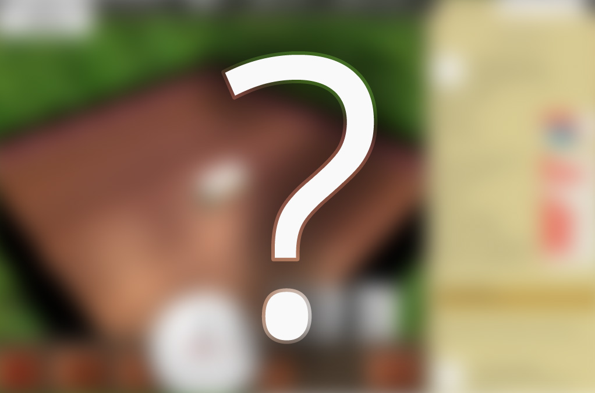

Tycoon Game
I am currently working on a new project which is in the vein of old 90's classic "Tycoon" style PC games. I will update once I have finished the Early Alpha.

Commuter Fling!
My first entry into the HTML5 game world. You have to throw commuters across a river into their correct companies during rush hour. This game is currently being ported to iPad (iOS).
Crazy Lunar Taxi
Akin to the old Sega "Crazy Taxi" and Ataris 1979 "Lunar Lander". Its the future and you have to pickup passangers and get them to there destination as soon as possible. Built in Unity 3, currently on hiatus.

Face Glof
Made in 48 hours with 3 other people for Cambridge Games Jam 2010 (Brains Eden Jam).